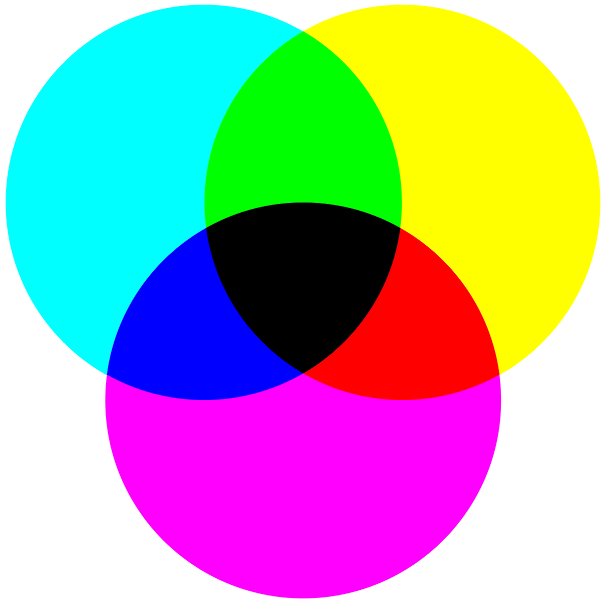

Kleurmodellen
Deze pagina gaat over het RGB-model en het CMY-model.
In een computer wordt niet alleen letters gecodeerd, maar ook kleuren. De twee belangrijkste
kleurmodellen zijn het RGB- en het CMY-model.
Om kleuren digitaal weer te geven, bijvoorbeeld op een scherm, wordt het RGB-model gebruikt. Het
CMY-model wordt gebruikt door printers om digitale bestanden te kunnen afdrukken.
RGB-model
Een beeldscherm heeft allemaal pixels. Als je verder inzoomt op die pixels, zou je rode, groene en blauwe
lampjes zien. Iedere pixel in het beeldscherm bestaat uit drie lampjes.
Verschillende kleuren kunnen worden weergegeven op het beeldscherm door deze drie lampjes helderder en
zwakker te laten branden.
Een kleurmodel mengt ook kleuren net zoals je verschillende kleuren verf met elkaar mengt, waardoor je
dus allemaal verschillende kleurencombinaties kan krijgen.
Het RGB-model is gebaseerd op de kleuren rood, groen en blauw. Deze drie kleuren zie je ook terug in de
kleuren van de lampjes in de pixels. Ze vormen de basis voor alle andere kleuren.
Bij het RGB-model zijn de kleuren die met mengen ontstaan anders dan bij het mengen van verf. Hieronder zie je een tabel met kleurencombinaties van het RGB-model.
| Kleur 1: rood | Kleur 2: groen | Kleur 3: blauw | Nieuwe kleur |
| - | - | - | Zwart |
| Rood | Groen | Blauw | Wit |
| Rood | Groen | - | Geel |
| Rood | - | Blauw | Magenta |
| - | Groen | Blauw | Cyaan |
Het RGB-model is gebaseerd op een zwarte achtergrond. De lampjes van de pixels branden niet als je
beeldscherm uitstaat, dus dan is het beeld zwart.
Door kleuren aan de zwarte achtergrond toe te
voegen, ontstaan nieuwe kleuren. Als je dus alle kleuren gebruikt, ontstaat er wit.
Om bijvoorbeeld de kleur magenta te maken, heb je rood en blauw nodig. Zo zou je het bijvoorbeeld kunnen noteren: magenta = (255, 0, 255).
De hoeveelheid rood, groen en blauw wordt aangegeven met een decimaal getal van 0 tot 256 (een byte). Dat komt omdat een computer niet met procenten kan werken.
CMY-model
Voor het weergeven van bijvoorbeeld een foto op een beeldscherm wordt dus het RGB-model gebruikt, waarbij
kleuren worden toegevoegd aan je zwarte beeldscherm.
Bij het uitprinten van b.v. een foto kan het RGB-model niet worden gebruikt, want het papier in de
printer is wit en anders gaat het mis door kleuren toe te voegen aan een witte achtergrond.
Speciaal hiervoor is er een ander kleurmodel, het Cyan-Magenta-Yellowmodel (CMY-model). De kleuren worden
toegevoegd aan een witte achtergrond bij dit model.
De drie kleuren die in dit model worden gebruikt zijn cyaan, magenta en geel.

Een mix van pure cyaan, magenta en geel geven geen zwart maar donkergrijs. Als je dit zou afdrukken met
een inkt-printer, wordt het papier op de plek waar zwart moet komen erg nat
van de inkt en duurt het drogen lang. Daarvoor is een oplossing bedacht, namelijk zwart aan het
kleurmodel toevoegen om toch zwart te kunnen maken.
Zo ontstaat het CMYK-model. De K staat dan voor key of voor black.